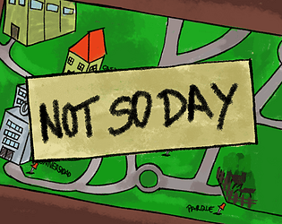

Not So Day
Not So Day es un juego de puzzles en el que el jugador experimenta una rutina aparentemente normal en la que va descubriendo que nada es como siempre. Con diferentes estilos que ambientan el juego, tendrás que realizar las tareas a las que estás acostumbrado pero de una forma un poco distinta. ¿Podrás superar la rutina? ¿O la rutina podrá contigo?
Jugar